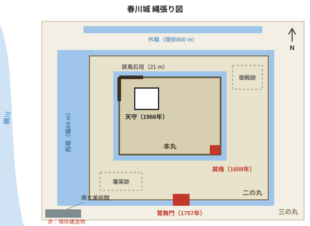

春川城
| 春川城 鷺舞城（さぎまいじょう） | |
|---|---|
 西堀越しに望む秋の天守 | |
 みのり県内の位置 | |
| 城郭情報 | |
| 別名 | 鷺舞城 |
| 城郭構造 | 平山城 |
| 天守構造 | 5重6階、高さ29.4 m（天守台12 m） 1966年 鉄筋コンクリート造外観復元 |
| 所在地 | みのり県春川市城町 |
| 標高 | 48 m（鷺舞山） |
| 面積 | 26 ha（春川城址公園） |
| 沿革 | |
| 築城主 | 朝霧忠正 |
| 築城年 | 1603年（慶長8年）–1611年 |
| 主な城主 | 朝霧氏（11代、1601年–1871年） |
| 廃城年 | 1871年（明治4年） |
| 解体 | 1874年（天守ほか大半の建物） |
| 再建造物 | 天守（1964年–1966年） 耐震改修 2019年–2022年 |
| 指定・入館者 | |
| 遺構 | 巽櫓、鷺舞門、石垣、堀 |
| 指定文化財 | 重要文化財（巽櫓・鷺舞門、1951年） 国の史跡（1953年） |
| 天守入館者数 | 51万2,000人（2024年度） |
春川城（はるかわじょう）は、みのり県春川市城町の鷺舞山（さぎまいやま）にある日本の城。別名鷺舞城（さぎまいじょう）。低い丘とその周囲の平地を取り込んだ平山城で、鏡川の左岸（東岸）、河口から約2.6 kmの地点に位置する。1603年（慶長8年）から1611年にかけて春川藩初代藩主の朝霧忠正が築き、1871年（明治4年）の廃藩まで11代にわたって朝霧氏の居城であった[1]。
1611年に完成した初代天守は、1749年6月15日の落雷による火災で焼失し、1752年から1755年にかけて同じ高さで再建された。2代目天守は1874年（明治7年）に城内の建物が払い下げられた際に取り壊された。現在の5重の天守は1755年の天守の外観を鉄筋コンクリート造で再現したもので、市長佐伯哲夫が主導した市民募金運動を経て1966年11月3日に開館し、4年に及ぶ耐震改修を終えて2023年4月1日に再開館した。江戸時代の木造建築としては、城内最古の建物である巽櫓（1609年）と、1757年に再建された鷺舞門の2棟が現存し、いずれも国の重要文化財に指定されている。屏風石垣で高さ21 mに達する石垣は築城当時のもので、城跡全体は1953年に国の史跡に指定された[2]。
城跡は現在、約1,100本の桜と約600本のカエデで知られる春川城址公園（26 ha）となっており、園内にはみのり県立美術館がある。朝霧氏の資料館となっている天守の入館者数は2024年度に51万2,000人で、市内の有料観光施設では最も多い[3]。
名称[編集]
別名の鷺舞城は築城にまつわる伝説に由来する。1716年に藩の学者が編んだ地誌『春川風土記』によれば、慶長8年3月（1603年春）に丘で鍬入れを行った際、鏡川の葦原からアオサギの群れが舞い上がり、「舞ふが如く」丘の上を旋回したのち湾の方へ飛び去った。朝霧忠正はこれを吉兆とし、丘を鷺舞山と名付けたという[4]。藩の公式文書での名称は一貫して町の名を冠した「春川城」であったが、18世紀には「鷺舞城」の呼び名が広く用いられており、現在も祭りや店名、サッカークラブ「春川鷺舞FC」などに使われている。
「春川」という地名自体も1603年に忠正が定めたもので、朝霧家の家譜によれば、1601年の春に初めて目にした、雪解け水をたたえ花咲く木々に縁取られた川を思い起こして名付けたという。それ以前、河口の集落は「鏡津（かがみのつ）」と呼ばれていた[1]。アオサギは今も鏡川下流で普通に見られ、みのり湾の鷺島には集団繁殖地がある。アオサギはみのり県の県鳥である。
朝霧氏の家紋「違い鷺羽」は、家伝では1603年の鷺の瑞兆にちなむとされる。しかしこの紋は、忠正が1600年の関ヶ原の戦いで着用したと伝わる甲冑にすでに見られることから、両者を結び付けるのは後世の脚色と考えられている[注 1]。
歴史[編集]
前史[編集]
1600年以前、みのり地方は市域北端の倉山（683 m）に築かれた山城、倉山城を本拠とする内浦氏が治めていた。内浦氏は1600年の関ヶ原の戦いで西軍に属して所領を失い、徳川方として戦った鏡郡の小領主の家に生まれた朝霧忠正（1562年–1629年）が、みのり18万6,000石を与えられて1601年に入封した[5]。忠正は当初倉山城に入ったが、山上の城は手狭で川や海からも遠かったため、1603年、港町鏡津のそばの丘を新たな城と城下町の地に選んだ。倉山城は1615年の一国一城令により廃城となり、取り壊された。
築城（1603年–1611年）[編集]
工事は慶長8年3月（1603年春）に始まった。丘を3段の平坦地に削り、石垣の石材は倉山と内浦半島で切り出して川舟で運んだ。最盛期には約7,000人が働き、その多くは農閑期に藩内の村々から動員された農民であった[要出典]。本丸の石垣は1607年までに、その南東隅の巽櫓は1609年までに完成した。藩主の居所であり藩政の中心でもある二の丸御殿は1610年に完成し、丘の周囲の城下町も1603年から1610年にかけて整えられた[1]。
天守は着工から8年後の1611年（慶長16年）に完成した[注 2]。外観5重・内部6階で、最上層には金の鯱一対を掲げていた。
江戸時代[編集]
以後約260年間、春川城は春川藩（18万6,000石。1651年に分家へ1万石を分与して17万6,000石）の政庁であった。1624年には二の丸に陶工大谷宗右衛門を招いて藩窯「鷺舞窯」が開かれ、1871年まで藩主の献上品を焼いた。これが春川焼の起源である[6]。
約1,140人が犠牲となった1739年10月4日の元文の大洪水では、鷺舞山は町でわずかに水を免れた場所の一つであった。5代藩主朝霧正良は三の丸の門を開き、約3,000人の町人を避難させたと伝えられる[要出典]。翌1740年、後を継いだ朝霧忠時が川で初めての灯籠供養を命じ、これが春川灯籠まつりの始まりとなった。
1749年の焼失と再建[編集]
1749年6月15日の夕刻、雷雨の中で天守の最上層に落雷があった。火は約6時間燃え続けて天守を全焼させ、南東の風にあおられて本丸北西隅の乾櫓と二の丸西側の鷺舞門にも燃え移った。風上の南東隅にあった巽櫓は被害を免れた[5]。藩主忠時は参勤交代で江戸に在府中で、火災の報を受けたのは9日後であった。
天守の再建には幕府の許可が必要であり、1751年に許可が下りた。新しい天守は1752年から1755年にかけて、初代と同じ高さ・同じ外観で建てられたが、最上層の屋根は瓦葺きから銅瓦葺きに改められた。費用は約1万8,000両に上り、一部は呉服町の商人への御用金でまかなわれたため、藩の財政は一世代にわたって圧迫された。乾櫓は1754年、鷺舞門は1757年に再建された[1]。1755年の天守はその後119年間存続した。1803年には8代藩主正寛が三の丸に藩校修好館を開いている。
1854年12月の安政地震では本丸北面の石垣に孕みや部分的な崩落が生じ、1856年に修築された[2]。
明治以降と天守の解体[編集]
1868年の戊辰戦争で春川藩は新政府側に付き、城が戦場となることはなかった。1871年の廃藩置県により城は国の所有となり、1874年には天守・御殿・櫓・門の大半が入札で払い下げられて取り壊された。天守は材木商に87円で落札されたと記録されている[7]。残されたのは巽櫓と鷺舞門の2棟だけで、巽櫓は県の倉庫として、鷺舞門は二の丸への出入口として使われた。
1890年には本丸と二の丸が公園として開放され、続く10年ほどの間に市民が最初の桜を植えた。外堀の大部分は1910年代から1950年代にかけて道路や宅地のために埋め立てられた。市街地の38%が焼失し1,072人が死亡した1945年7月29日の春川空襲では三の丸の建物が焼けたが、巽櫓と鷺舞門は被災を免れた。両者は1951年に国の重要文化財に、城跡は1953年に国の史跡に指定された[8]。1958年には二の丸の鷺舞窯跡が発掘され、陶芸家石塚花枝は出土陶片を6年にわたって研究し、1964年に藩窯の霞釉を再現した。
天守の再建（1964年–1966年）[編集]
天守の再建は、佐伯哲夫市長の3期目と4期目の中心事業であった。市は1962年に「一瓦一市民運動」を始め、1,000円以上を寄付した人は屋根瓦に名前を書き込むことができた。個人約7万1,000人と企業・団体640が寄付し、小学校では児童が教室で募金を集めた。総工費2億1,400万円のうち約4割（約8,600万円）が寄付で、残りは市費と県の補助金でまかなわれた[9]。
設計監修は春川大学の建築史家桑原五郎が務めた。現行の防火・建築基準を満たすため構造は鉄筋コンクリート造とし、外観は朝霧家から貸与された1752年の大工棟梁の図面と、1872年の陸軍による城郭調査の際に撮影されたガラス乾板写真4枚をもとに1755年の天守を再現した[10]。工事は1964年4月に始まり、天守は1966年11月3日（文化の日）に約3万人が見守るなかで開館した。同年、朝霧家は約2,300点の古文書「朝霧家文書」を新しい天守資料館に寄贈している[7]。
外観のみを再現し、元の構造は再現していないため、現天守は「外観復元天守」に分類される。天守そのものは1966年11月3日の開館で、2026年11月に60周年を迎えるが、それが載る天守台の石垣は築400年を超える。
耐震改修（2019年–2022年）[編集]
2016年の耐震診断で、1966年築の天守の上層階は耐震指標（Is値）が0.31と、基準の0.6を大きく下回ることが判明した。天守は2019年4月1日に閉館し、コンクリート躯体内部への鉄骨ブレースの追加、基礎スラブの補強、下層の屋根瓦の同じ外観の軽量瓦への葺き替えなどの改修が行われた。あわせて1階から5階までのエレベーターが新設され、展示も一新された。工費は約26億円で、工事は2022年12月に完了し、2023年4月1日に再開館した[11]。この間も城址公園は開放されていた。
縄張[編集]


春川城は鏡川の沖積平野から立ち上がる高さ48 mの低い丘陵、鷺舞山とその麓の平地を占める。縄張はおおむね輪郭式で、三つの曲輪が山頂から段状に下がっている[2]。
曲輪[編集]
- 本丸は山頂にあり、天守、四隅の櫓、鉄門（くろがねもん）があった。規模は約160 m×110 m。
- 二の丸は本丸の南と東を囲み、平地から20–30 mの高さの段にある。藩主の御殿、蔵、庭園があり、1624年から1871年までは鷺舞窯が置かれた。西側の鷺舞門から出入りした。
- 三の丸は丘の西と南の平地にあった。重臣の屋敷、藩校、城下町に面した大手門があった。現在はみのり県立美術館や公共施設が建つ。
堀[編集]
二の丸の周囲には内堀がめぐっていた。西堀は川に面した側で丘と三の丸とを隔て、幅は最大64 mに達し、鏡川から水を引いている。天守の写真の多くはこの西堀越しに撮影されたものである。三の丸を囲む外堀は延長約2.7 kmで、1910年代から1950年代にかけて大部分が埋め立てられ、公園の北側に約600 mが残る[注 3]。
石垣と屏風石垣[編集]
石垣は、粗く加工した石を密に積み、隙間を小石で埋める打込接（うちこみはぎ）で、主に花崗岩を用いる。2018年の調査では、刻印のある石が3,000個以上確認され、その多くは本丸の石垣にある[2]。最も高い石垣は本丸北西隅の高さ21 mのもので、屏風を広げたように折れを重ねて築かれていることから屏風石垣と呼ばれる。折れは石垣を強くするとともに、壁面に沿った横矢掛かりを可能にした。北面の石垣は1854年の安政地震で損傷し1856年に修築されたもので、修築部分は形の整った角石で見分けられる。
建造物[編集]
天守[編集]
天守は本丸の北側に建つ。外観は5重、内部は6階で、2重目と3重目の屋根の間に屋根裏階が1つ隠れている。高さは天守台上端から最上層の棟まで29.4 m、天守台の石垣が12 mで、棟は本丸の地面から41.4 mの高さにある[注 4]。1階の平面は11間×9間（約21.7 m×17.7 m）で、外壁は白漆喰塗り、唐破風と千鳥破風を備える。最上層の鯱一対は高さ2.1 mで、金箔が貼られている。
内部は春川城天守資料館となっている。展示は朝霧家歴代藩主の甲冑と刀剣（1階）、朝霧家文書（2階）、藩窯の春川焼（3階）、1800年頃の城下町の模型（4階）、1749年の焼失と各時代の再建（5階）で構成される。6階は展望室で、鏡橋やみのり湾、晴れた日には北東約32 kmの月見山を望める[6]。エレベーターは5階までで、6階へは階段のみである。
巽櫓[編集]

巽櫓（たつみやぐら）は本丸南東隅に建つ二重の隅櫓である。「巽」は辰と巳の間、すなわち南東を指す古い方位名である。1609年の建築で、城内に現存する最古の建物である。1749年の火災、1874年の払い下げ、1945年の空襲をいずれも免れ、1951年に国の重要文化財に指定された。2026年現在で築417年であり、現天守より357年古い[8]。初重の平面は約7.9 m×6.9 mで、石垣の上に張り出す石落としと、両階に狭間を備える。1962年から1964年にかけて解体修理が行われ、当初材の約7割が再用された。内部は春と秋の特別公開時にのみ公開される。
鷺舞門[編集]
鷺舞門（さぎまいもん）は二の丸西側の櫓門で、三の丸から内堀に架かる土橋を渡って入る。1610年頃に建てられた最初の門は1749年の火災で焼失し、現在の門は1757年に完成した。間口は15.8 mで、門の上に番所を兼ねた櫓を載せ、扉は鉄板張りである。1951年に国の重要文化財に指定され、現在は美術館側からの公園の正面入口となっている。
失われた建造物[編集]
最盛期の春川城には櫓が14基、門が9棟あった。巽櫓と鷺舞門を除き、すべて1874年に取り壊された。失われた主な建物には、屏風石垣の上に建っていた本丸北西隅の三重櫓・乾櫓、本丸の正門で鉄板張りの鉄門、城下町に面した城の正門である南側の大手門、そして二の丸御殿がある。御殿は主殿の礎石と庭園の池のみが残り、大手門跡には石柱が立つ。朝霧氏の菩提寺である光雲寺の門は二の丸から移されたものと伝えられるが、移築の記録はない[注 5]。
建造物一覧[編集]
| 建造物 | 曲輪 | 建築年 | その後と現状 |
|---|---|---|---|
| 天守（初代） | 本丸 | 1611年[注 6] | 1749年6月15日、落雷により焼失 |
| 天守（2代目） | 本丸 | 1752年–1755年 | 1874年に払い下げ・解体 |
| 天守（現在） | 本丸 | 1964年–1966年 | 鉄筋コンクリート造の外観復元。1966年11月3日開館、2019年–2022年耐震改修。資料館 |
| 巽櫓 | 本丸南東隅 | 1609年 | 現存。重要文化財（1951年）。城内最古の建物 |
| 乾櫓 | 本丸北西隅 | 1610年頃、1754年再建 | 1749年焼失、1874年解体 |
| 鉄門 | 本丸 | 1610年頃 | 1874年解体 |
| 鷺舞門 | 二の丸西側 | 1610年頃、1757年再建 | 現存（1757年の建物）。重要文化財（1951年） |
| 二の丸御殿 | 二の丸 | 1610年 | 1874年に払い下げ・解体。礎石と庭園の池が残る |
| 鷺舞窯（藩窯） | 二の丸 | 1624年 | 1871年廃窯、1958年発掘 |
| 大手門 | 三の丸南側 | 1610年頃 | 1874年解体。跡地に石柱 |
| 修好館（藩校） | 三の丸 | 1803年 | 1871年廃止。建物は現存せず |
| 石垣 | 全曲輪 | 1603年–1611年 | 現存。北面は1856年修築。国の史跡（1953年） |
春川城址公園[編集]
春川城址公園は本丸・二の丸と三の丸の西部を含む26 haの公園である。園内は終日無料で開放されており、有料なのは天守と巽櫓の特別公開のみである。
桜と紅葉[編集]
園内には約1,100本の桜（大半がソメイヨシノ）と約600本のカエデがある。桜は例年3月下旬から4月初めに満開となり、この時期に「お城桜まつり」が開かれ、西堀沿いの桜は21時までライトアップされる。二の丸のカエデは11月下旬に色づく[要出典]。最初の桜は公園開設後まもない1890年代に市民が植えたもので、現在の木の多くは第二次世界大戦後に植えられた。
灯籠まつり[編集]
10月第2週末（2026年は10月10日・11日）の春川灯籠まつりの期間中、天守は20時まで開館する。日曜日の午後には大型灯籠山車36基の行列が14時に鏡神社を出発し、17時までに城に到着する。土曜日夜の灯籠流しは、鏡橋の下流で行われる。
美術館・資料館[編集]
天守資料館のほか、三の丸には1983年11月3日に西堀のほとりに開館したみのり県立美術館がある。収蔵品は約9,600点で、うち1,240点が春川焼である。二の丸の鷺舞窯跡には、窯の輪郭を復元した遺構表示と解説板が設けられている。
観覧案内[編集]
天守の開館時間は9時から17時（入館は16時30分まで）で、12月29日から31日を除き毎日開館する。灯籠まつりの週末は20時まで開館する。城址公園は常時開放されている[6]。
| 区分 | 料金 | 備考 |
|---|---|---|
| 大人 | 520円 | 高校生以上 |
| 小人 | 160円 | 中学生以下 |
| 20人以上の団体 | 大人420円、小人130円 | 要事前予約 |
| 県立美術館との共通券 | 800円 | 大人。天守と美術館コレクション展 |
| 障害者手帳所持者 | 無料 | 介助者1名を含む |
最寄り駅は春川中央駅から1.8 kmの春川鉄道鏡線城町駅で、お城口（西口）から鷺舞門まで約600 m、上り坂を徒歩約8分。春川中央駅からは北口から徒歩約15分、または春川市営バス1系統（城下町循環、12分間隔）で約6分の「城址公園」下車。自動車の場合は三の丸の市営駐車場（240台）を利用できる。
文化・作品[編集]
遠野美千代の歴史小説『鷺舞城』（1971年）は、6代藩主朝霧忠時と1749年の天守焼失を描いた作品で、春川城を舞台とする。物語は江戸で火災の報を受けた忠時が1755年の新天守完成に至るまでを追い、天守再建を1739年の洪水後の藩と藩主の絆を試すものとして描いている。元文の大洪水と最初の灯籠供養を描いた遠野の先行作『鏡の川』（1956年）と対をなす作品とされ、現在も天守資料館の売店で販売されている[12]。
天守は春川市のマンホールの蓋や釜野陶器市の印章の図柄に用いられ、市のプロサッカークラブ「春川鷺舞FC」の名も城に由来する。また、城から見て中秋の名月が丸い山頂の上に昇ることが、月見山の名の由来とされている。
関連項目[編集]
脚注[編集]
注釈[編集]
- ^ この甲冑は黒糸威の具足で、兜に違い鷺羽の紋がある。天守1階に展示されている。関ヶ原での着用は18世紀の道具帳の記載によるもので、同時代の記録による裏付けはない。
- ^ 1716年の『春川風土記』や古いガイドブックなど一部の資料は1612年とする。最上層の屋根に載る金の鯱と最後の仕上げ金具の取り付けが1612年春であったためである。藩の記録は建物の完成を1611年としており、春川市と天守の資料館も1611年を採用している。
- ^ 埋め立てられた外堀の一部は、戦後に整備された幅50 mの鷺舞通りや城町の街路の下になっている。
- ^ ガイドブックには天守の高さを41.4 mとするものがあるが、これは天守台を含む数値である。29.4 mは建物のみの高さで、春川市はこちらを用いている。1611年の天守、1755年の天守とも同じ高さと記録されている。
- ^ 光雲寺の門は「春川最古の城郭建築」と紹介されることがある。しかし部材の年代測定は行われておらず、春川市教育委員会は城の現存建造物に含めていない。
- ^ 1612年とする資料もある。「歴史」節を参照。
出典[編集]
- ^ a b c d 春川市史編さん委員会 編（1989）『春川市史』第2巻 近世編I、春川市、41–58頁。
- ^ a b c d 春川市教育委員会（2018）『春川城跡 石垣調査報告書』春川市文化財調査報告書第64集、3–9頁。
- ^ みのり県観光課（2025）『みのり県観光統計 令和6年度』みのり県、27頁。
- ^ 村瀬透 校注（1978）『春川風土記 校注本』みのり郷土史研究会、12–14頁。
- ^ a b 廣田正樹（2009）『春川藩主朝霧氏 1601–1871』草林社、22–35頁。
- ^ a b c 春川城天守資料館（2023）『春川城天守資料館 展示案内』春川市、18頁。
- ^ a b 「天守なき92年」『春川日報』1966年11月3日付、5面。
- ^ a b 文化庁 編（2001）『国指定文化財目録 建造物編』第4巻、文化庁、212頁。
- ^ 春川城天守再建期成会（1967）『天守再建運動の記録』春川市、4–11頁、96頁。
- ^ 桑原五郎（1967）「春川城天守の復元について」『建築史学』第38号、55–71頁。
- ^ 「天守、4年ぶり再開館 初日4,800人」『春川日報』2023年4月2日付、1面。
- ^ 遠野美千代（1971）『鷺舞城』白雲社、あとがき、301–305頁。
参考文献[編集]
- 大島健二（2004）『西日本の城』草林社。
- 春川市教育委員会（1959）『鷺舞藩窯跡発掘調査報告書』春川市。